遊びで植物を育てよう
2024/06/22
芽かき分のジャガイモを収穫しました。
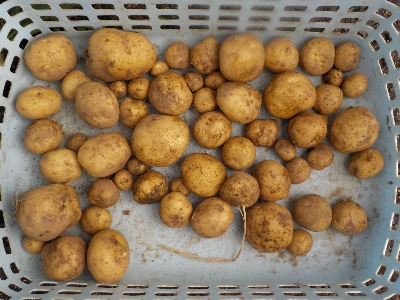
芽かきしたものを植えて育てたジャガイモを収穫しました。ちょっと小さいけど、十分食べれる大きさでした。
コロコロしててとっても美味しそうです。こんなに良くできるんなら、もっとたくさん植えればよかったかな。
【じゃがいもTOP】
【野菜TOP】
【園芸TOP】
2024/05/25
取り残しのジャガイモを引っこ抜きました。
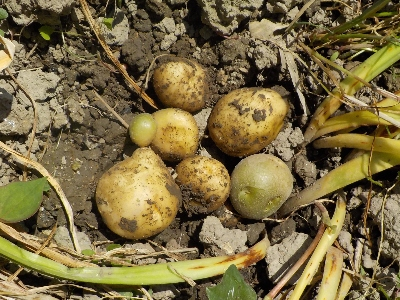
勝手に生えてるジャガイモが邪魔だったので引っこ抜いたら、
下から小さいけど食べれそうなジャガイモが出てきました。
土寄せしてないので緑のものもありますが、4つくらいは食べれるかな。
【じゃがいもTOP】
【野菜TOP】
【園芸TOP】
2024/05/25
芽かきしたジャガイモがすくすく育ってます。

もともと根っこがあったからか、1本も枯れませんでした。
あとはどんだけ収穫できるかですね。
今日は土をちょっと寄せました。
【じゃがいもTOP】
【野菜TOP】
【園芸TOP】
2024/05/05
間引いたジャガイモを植えました。

ジャガイモの芽かきをしました。
根っこ付きで抜けた芽を捨てるのはもったいないと思い、土に植えました。
今からだと大きい芋は採れないかもしれないけど、小さいのが沢山採れたらいいかな。
【じゃがいもTOP】
【野菜TOP】
【園芸TOP】
2023/12/30
年末にじゃがいもを収獲しました。
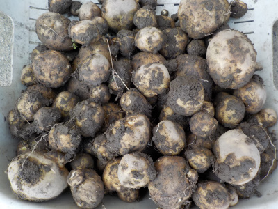
時間がある時に芋掘りしようと思っていたら、年末になりました。
来年は先延ばししない生活をしたいな。
【じゃがいもTOP】
【野菜TOP】
【園芸TOP】
2023/08/05
夏の暑さでジャガイモが枯れました。
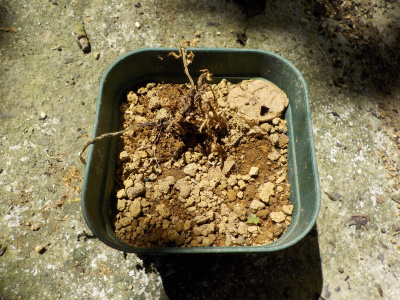
日差しの弱い涼しい場所だったら大丈夫かなと思ったんですが、ダメでした。
無理でしたか。
【じゃがいもTOP】
【野菜TOP】
【園芸TOP】
2023/06/18
じゃがいもの皮栽培を再挑戦しようかな。
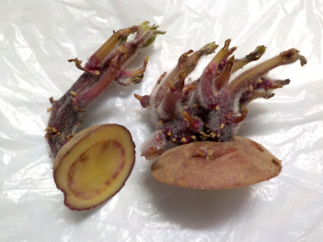
冬に収穫したジャガイモから、太い芽が出ていました。これを植えたら育つかな?
前回は大きくなる前に終了しましたが、今から育てる事が出来れば秋には大きくなっていそう。
夏の暑さに耐えれない可能性がありますが、試しに2本やってみようと思ってます。
【じゃがいもTOP】
【野菜TOP】
【園芸TOP】
2023/06/04
皮から育てたジャガイモに小さなジャガイモが出来ていました。
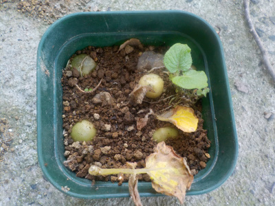
成長が遅いのでほったらかしにしていたジャガイモの皮栽培です。
気温が上昇して苗が枯れた後に、ミニじゃがいもが出来ていました。
小さい苗でもちゃんと小さいですけどジャガイモが出来るんですね。この緑のジャガイモは食べれないし、小さいので種芋にも出来ないな。
【じゃがいもTOP】
【野菜TOP】
【園芸TOP】
2023/04/15
じゃがいもがスクスク育っています。
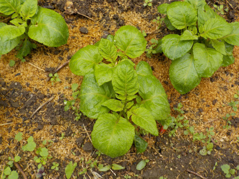
畑に植えたじゃがいもがスクスク育っています。
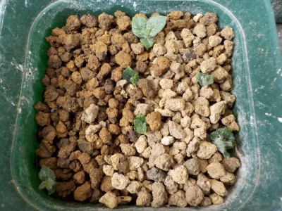
枯れたと思っていたじゃがいもの皮ですが、小さな芽が出ました。
皮だけでイモの養分が少ない分、成長が遅かったのかもしれないです。
今このサイズの芽を育てて、夏までに収獲出来るかは謎ですね。
【じゃがいもTOP】
【野菜TOP】
【園芸TOP】
2023/03/19
じゃがいもの皮は失敗しました。
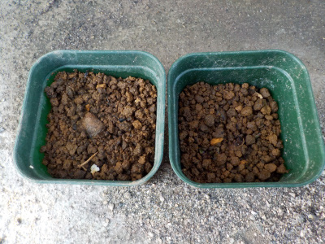
じゃがいのの皮からジャガイモを育てようとしましたが、芽が育ちませんでした。
水やりの回数が少なかったので、乾燥し過ぎで枯れたと思います。
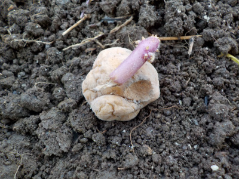
代わりに去年収獲した小さいジャガイモを植えました。
【じゃがいもTOP】
【野菜TOP】
【園芸TOP】
2023/02/05
じゃがいもの皮を2ポット追加。
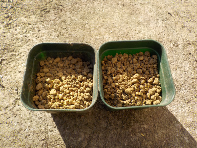
前回植えたものはまだ何の変化も見えません。
ちゃんと育つか分かりませんが、更に2つ追加しました。
【じゃがいもTOP】
【野菜TOP】
【園芸TOP】
2023/01/29
じゃがいもの皮からじゃがいもの苗を作ろうと思っています。
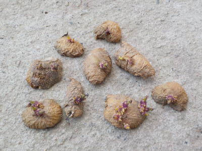
芽が出たジャガイモは芽を取り除いて食べるんですが、芽を捨てないで土に植えてみることにしました。
じゃがいも種芋って、芋が育って収獲した時にも残ってたりしますよね。なので芋が育つのに、芋の栄養分ってあんまりいらないんじゃないかと思います。
芽とちょっとの量の芋があれば成長して芋が収獲出来るんじゃないかと思ったので試してみます。
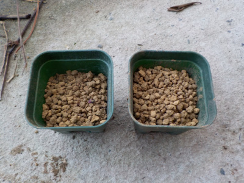
カビが生えるかもしれないので、ちょっと乾燥させてシワシワになった皮を1つのポットに4つとか5つ入れて水をやりました。
にょきにょきっと芽が出るといいな。
【じゃがいもTOP】【野菜TOP】【園芸TOP】
レンジで作るポテトチップスは難しい。
【おいしいものを食べよう。】【たくさん寝よう。】
【ソロ活をしよう!】【季節感のあることをしよう。】【動画視聴はほどほどに。】【当サイトの全てのコンテンツは無断転載禁止です。】